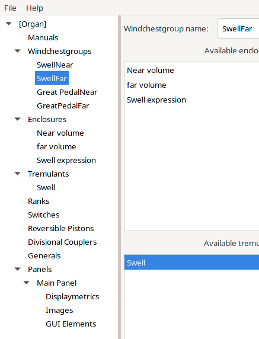
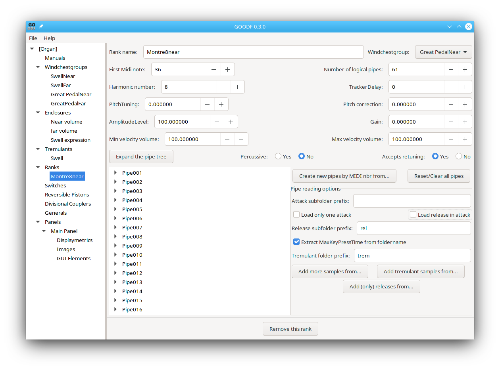

Suppose, for example, you want to create a two manual plus pedal organ with four channel surround sound. To do this you would create four windchestgroups, three enclosures, and one tremulant) as shown in the figure:

When you select the SwellNear windchestgroup you add the Near volume and Swell expression enclosures to the referenced enclosures, and add the Swell tremulant to the referenced tremulants. Similarly for the SwellFar windchest you do the same thing except adding the far volume enclosure instead of the near volume enclosure.
For the GreatPedalNear windchestgroup, you only add the Near volume enclosure; and for the GreatPedalFar windchestgroup you only add the far volume enclosure
You then create two ranks for each stop. For example, for the Great Montre 8 stop, you would create a Montre8near rank and a Montre8far rank, using the available near and far samples for that stop. The Montre8near rank is assigned to the GreatPedalNear windchest group as shown here:
